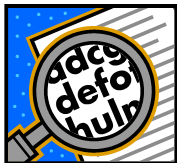
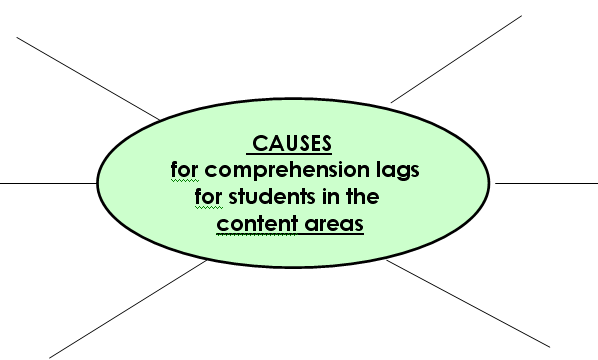

Activity 2 - Reading Factors
What are factors that influence reading development
and what causes comprehension lags?
How Reading Develops
The language experience begins with listening and children beginning to perceive speech sounds during the first year. Next comes speaking, with most children uttering their first word around age one (1). The more listening and speaking interaction children are exposed to the more prepared they will be to begin reading. Reading includes several processes that need to take place at the same time, processes such as recognizing words, assigning meanings to words, constructing the meanings of sentences and larger units and relating the information to information the child already has.
There is evidence that vocabularies of many children of poverty entering school are much smaller than those of their middle class counterparts. There is also evidence that having a limited vocabulary is detrimental to success in reading.
According to the National Assessment of Education Progress (NAEP) on reading (2002), only 31% of fourth graders can read at a proficient or advanced level. Achievement among the highest-performing students remained stable, and America's lowest performers have improved only slightly. There is a wide achievement gap between poor and more economically advantaged students, as well as between white and minority students.
Find the handout, Factors that Influence Reading Development, and watch this video that outlines the factors that influence reading:

Now that we know what influences reading development, what can we as teachers do to overcome these factors?
|
What are factors that cause comprehension lags?
COMPREHENSION LAGS - when students struggle or fail to comprehend or understand what they are reading in content or academic subject areas
Think about what factors may cause comprehension lags and how you might web your ideas.

The following are some factors that contribute to student comprehension lags:
|
Now that we know what comprehension lags are and why they happen, what can we do about these lags in comprehension?
The No Child Left Behind Act (NCLB) is an education reform designed to improve student achievement and close achievement gaps.
NCLB emphasizes implementing education programs and practices that have been clearly demonstrated to be effective through scientific research. There is valid evidence indicating the use of these researched based practices will facilitate gains in reading achievement and comprehension. (National Institute for Literacy) These are the instructional strategies that you were introduced to in Frameworks.
Marzano identifies several researched based instructional strategies that are designed to improve student achievement. You have covered these in Frameworks. Make sure you are familiar with these strategies and can implement them in a classroom setting.
Six Research-Based Instructional Strategies (Marzano, Pickering, and Pollock, 2001)
|
1. Cooperative Learning Groups |
What can you, as a teacher, do to influence reading factors?
Teachers can...
- base teaching reading methods on replicated research
- help students who are having difficulty learning to read
- create a supportive classroom environment
Teachers cannot...
- improve the family situation at home
- improve the economic situation at home
- make English the primary language spoken at home